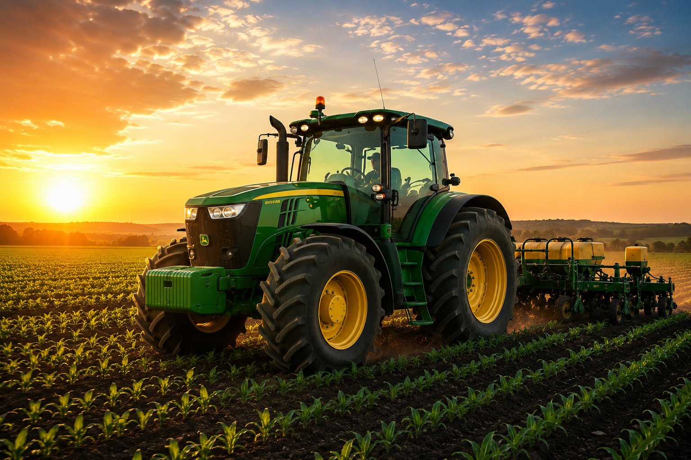
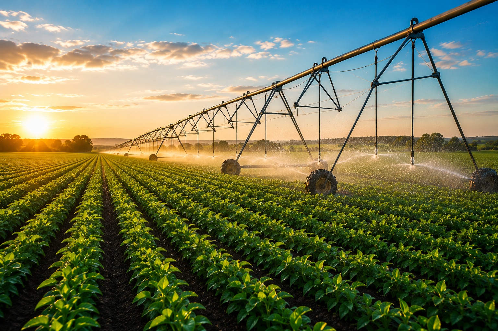
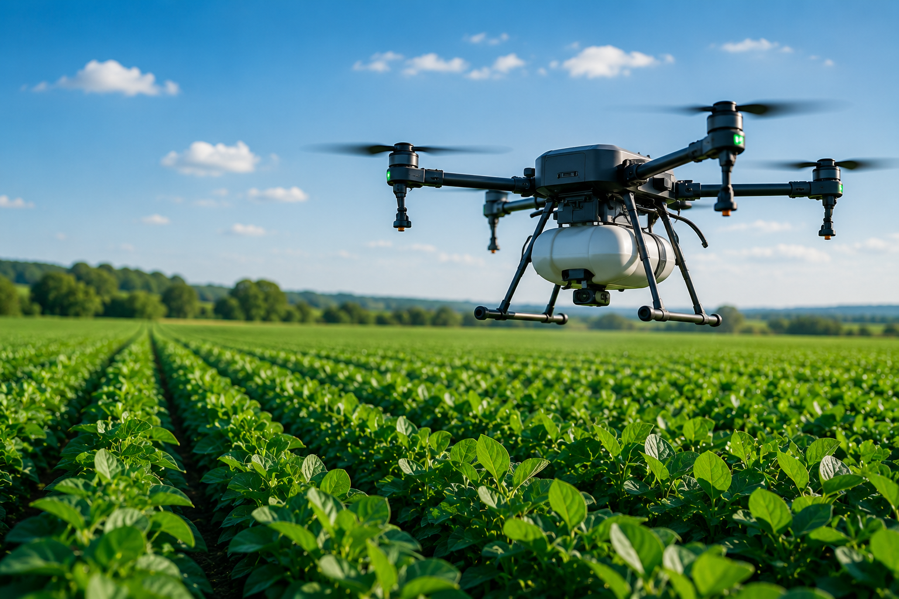
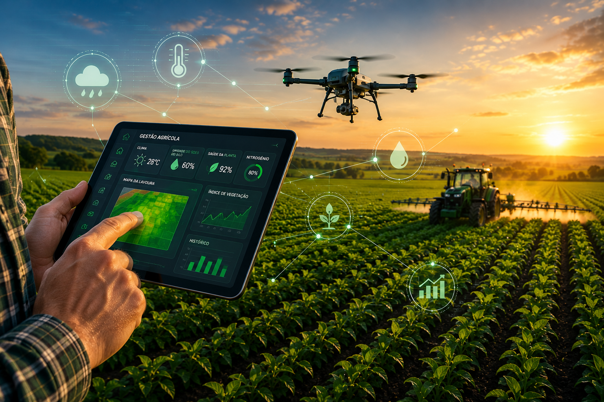
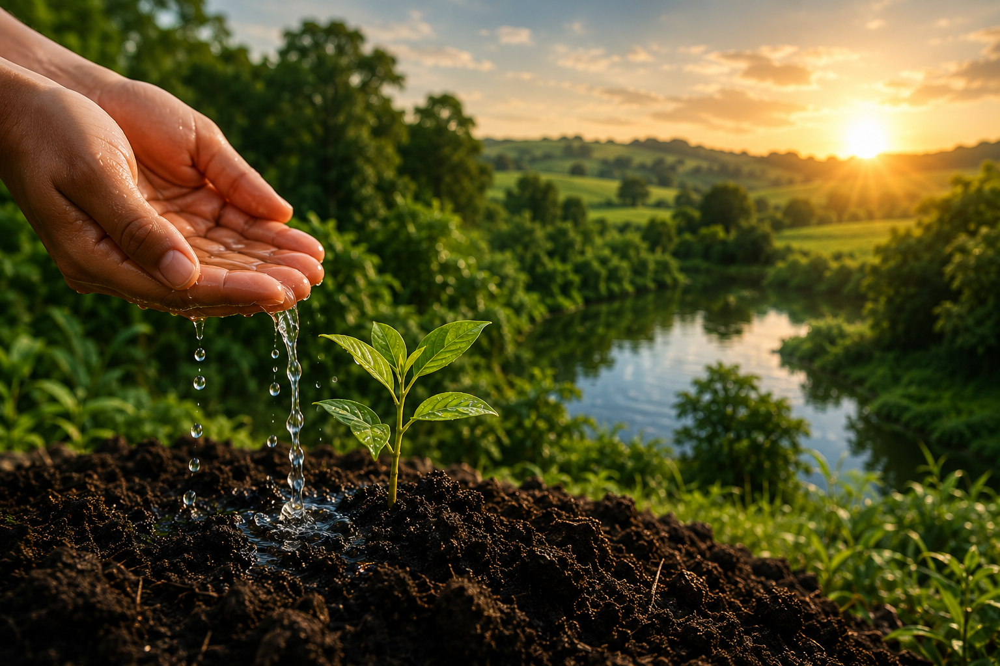
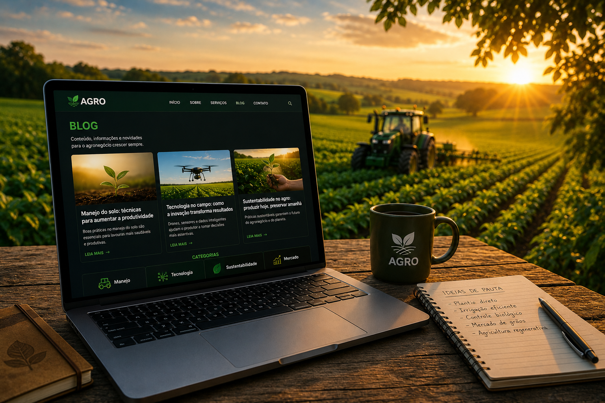
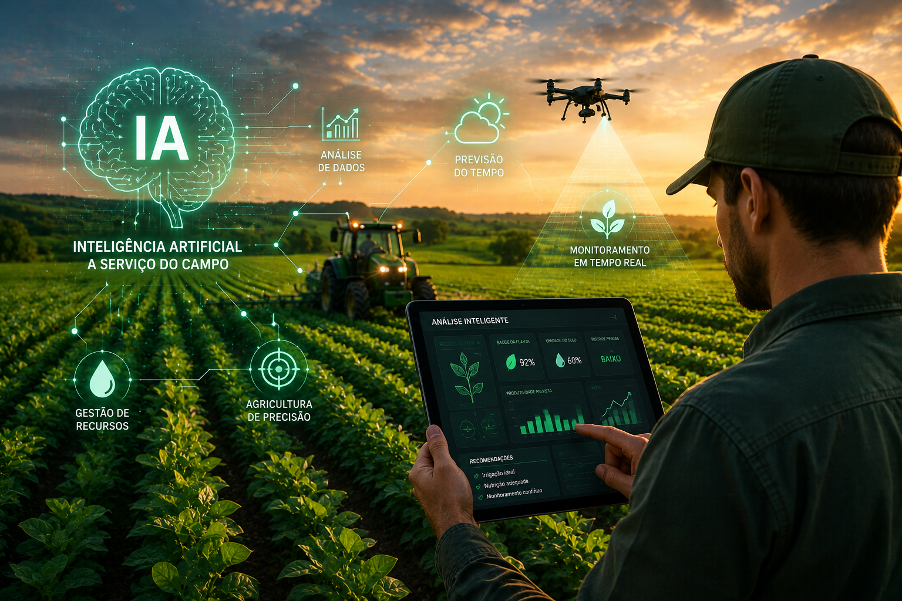

Este projeto foi desenvolvido utilizando HTML, CSS e JavaScript com foco em sustentabilidade e tecnologia no agronegócio.
O objetivo é mostrar como a tecnologia pode ajudar produtores rurais a preservar recursos naturais e aumentar a produtividade.




Drones, sensores e inteligência artificial ajudam no monitoramento das lavouras e reduzem desperdícios.

Produzir alimentos preservando água, solo e meio ambiente é essencial para o futuro das próximas gerações.

A agricultura moderna utiliza tecnologia para monitorar plantações, prever mudanças climáticas e otimizar recursos naturais.
Sistemas inteligentes ajudam agricultores a tomar decisões mais rápidas e eficientes.
Qual dessas práticas ajuda na preservação ambiental?
O Brasil é um dos maiores produtores agrícolas do mundo.

Olá! Pergunte algo sobre sustentabilidade ou tecnologia agrícola.
Email: agro@email.com
Projeto desenvolvido para o Agrinho 2026.